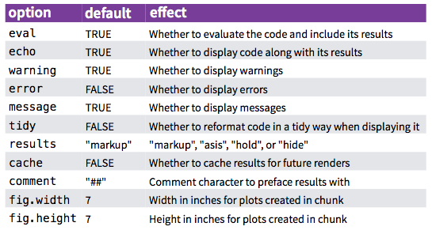
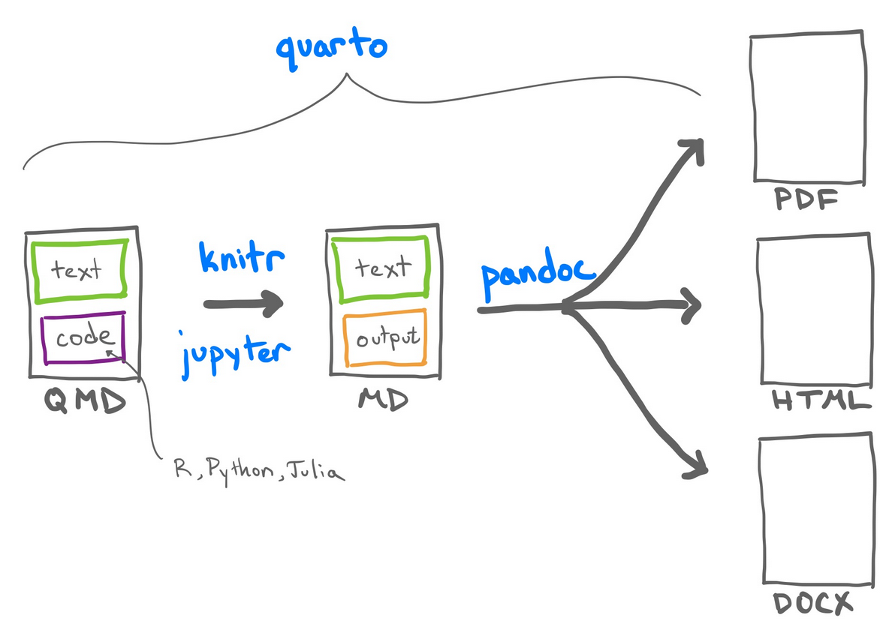

Platforms Cheat Sheet
Shell
ls- list files and directories. Default behavior is to list the contents of the current working directory.cd- change directory. Used to navigate the filesystem. Default behavior is to change to the home directory.pwd- print working directory. It will return the absolute path of the current working directory.mkdir- make directorytouch- create filerm- remove filermdir- remove directorymv- move file. also used to rename file.cp- copy filewhich- locate a program. It will return the path of the program.
Flags
These flags allow us to modify the default behaviour of a program.
-a- all-l- long-h- human readable-r- recursive-f- force
Directories
.- current directory..- parent directory~- home directory/- root directory
Common Terms
| Term | Definition |
|---|---|
| Graphical user interface (GUI) | A user interface that relies on windows, menus, pointers, and other graphical elements |
| Command-line interface (CLI) | A user interface that relies solely on text for commands and output, typically running in a shell. |
| Operating system | A program that provides a standard interface to whatever hardware it is running on. |
| Filesystem | The part of the operating system that manages how files are stored and retrieved. Also used to refer to all of those files and directories or the specific way they are stored. |
| Subdirectory | A directory that is below another directory |
| Parent directory | The directory that contains another directory of interest. Going from a directory to its parent, then its parent, and so on eventually leads to the root directory of the filesystem. |
| Home directory | A directory that contains a user’s files. |
| Current working directory | The folder or directory location in which the program operates. Any action taken by the program occurs relative to this directory. |
| Path (in filesystem) | A string that specifies a location in a filesystem. |
| Absolute path | A path that points to the same location in the filesystem regardless of where it is evaluated. It is the equivalent of latitude and longitude in geography. |
| Relative path | A path whose destination is interpreted relative to some other location, such as the current working directory. |
| Directory | An item within a filesystem that can contain files and other directories. Also known as “folder”. |
| Root directory | The directory that contains everything else, either directly or indirectly. |
| Prompt | The text printed by the shell that indicates it is ready to accept another command. |
| Symbol | |
|---|---|
| A. Root directory (see note) | / |
| B. Parent directory | .. |
| C. Current working directory | . |
| D. Home directory | ~ |
| E. Command line argument | -y or --yes |
| F. Prompt (R) | > |
| G. Prompt (Python) | >>> |
| H. Prompt (Bash) | $ |
Git and Github
git init- initialize a git repositorygit add- add files to staging area.- Staging area is a place where we can group files together before we “commit” them to git.
git commit- commit changes to git. Records a new version of the files in the repository.git push- push changes to remote repository from local repositorygit pull- pull changes from remote repository to local repositorygit status- check status of git repositorygit log- check commit historygit log --oneline- check commit history in one linegit log -p- check commit history with changes
git diff- check difference between two commitsgit reset- reset git repositorygit reset --hard- reset git repository to last commitgit reset --soft- reset git repository to last commit but keep changes
git revert- revert git repository. The difference between revert and reset is that revert creates a new commit with the changes from the commit we want to revert.git stash- saves changes that you don’t want to commit immediately. It takes the dirty state of your working directory — that is, your modified tracked files and staged changes — and saves it on a stack of unfinished changes that you can reapply at any time.
Common Terms
- Repository - a collection of files and folders that are tracked by git.
- Commit - a snapshot of the repository at a specific point in time.
- Commit Hash - These are the commits’ hashes (SHA-1), which are used to uniquely identify the commits within a project.
- Branch - a parallel version of a repository. It is contained within the repository, but does not affect the primary or master branch allowing you to work freely without disrupting the “live” version.
Public and Private Keys
Public key is used to encrypt data and private key is used to decrypt data.
Confidentiality - only the intended recipient can decrypt the data.
Authentication - only the intended recipient can encrypt the data.
SSH vs HTTPS
SSH is more secure than HTTPS because it uses public and private keys to encrypt and decrypt data. HTTPS uses username and password to authenticate users.
Quarto and Github Pages
Github pages will look in either the repository root / directory or in the repository docs/ directory for website content to render.
Dynamic Documents
- Dynamic Documents: Rooted in Knuth’s “literate programming” concept from 1984.
- Main Goals:
- Write program code.
- Create narratives to elucidate code function.
- Benefits:
- Enhances understanding and provides comprehensive documentation.
- Gives a way to run code and view results.
- Allows text and code to be combined in a single document.
- Facilitates reproducibility of results and diagrams.
- Popular Formats:
- Jupyter Notebooks (.ipynb)
- RMarkdown documents (.Rmd)
- Key Features:
- Narratives formatted with markdown.
- Executable code:
- Interwoven in text (RMarkdown’s inline code).
- Separate sections: code cells (Jupyter) or code chunks (RMarkdown).
RSudio and Quarto
RStudio Basics
| Function | Description |
|---|---|
getwd() |
Returns the current working directory of the R session. |
setwd(path) |
Changes the working directory to the specified path. |
here::here() |
Creates file paths relative to the project’s root (where the .Rproj file is) to ensure consistent and portable references. |
Note: For portability, prefer here::here() over setwd() to avoid path inconsistencies across different systems.
RStudio code chunks

Global looks like this:
Quarto

| Feature/Aspect | Jupyter Notebooks | RMarkdown | Quarto (.qmd) |
|---|---|---|---|
| Primary Language | Python | R | Python, R, Julia |
| Secondary Language | R (via R kernel) | Python (via reticulate) |
R with Python (via reticulate), Python with R (via rpy2) |
| Compatible Editors | JupyterLab, VS Code | RStudio | RStudio, VS Code, JupyterLab |
| Special Features | - | - | Single engine processing, cross-language integration |
| Recommended Environments | JupyterLab or VS Code | RStudio | RStudio (offers code-completion, incremental cell execution, and other tools for working with executable code) |
RMarkdown Templates
- On top of the RMarkdown document, you can specify a template.
- Templates are
.Rmdfiles that contain the YAML header and some default text.
---
title: "Untitled"
output: github_document / html_document / pdf_document / word_document
author: "farrandi"
date: "10/2/2023"
---Basic Quarto presentation:
# Same YAML header as above
---
title: "521 Quiz 2"
author: "Daniel Chen"
format: revealjs
---
# In the morning
## Getting up
- Turn off alarm
- Get out of bed
## Breakfast
- Eat eggs
- Drink coffee
# In the evening
## Dinner
- Eat spaghetti
- Drink wine
## Going to sleep
- Get in bed
- Count sheepPresentations in JupyterLab
- JupyterLab supports presentations using the JavaScript framework:
reveal.js. reveal.jsis the same framework used by Quarto.- Cells for presentations are marked via the property inspector:
- Found at the settings wheel in the left side panel.
- Select slide type from the dropdown menu.
reveal.jspresentations are two dimensional:- Horizontal slides
- Vertical sub-slides
Image Inclusion Workaround
- Images using
or<img>tags don’t show up in exports. - Workaround: Paste images into a Markdown cell to include them as attachments. This ensures visibility in HTML and slide exports.
Virtual Environments
- Virtual Environments: Isolated Python environments that allow for the installation of packages without affecting the system’s Python installation.
- Benefits:
- Isolation: Packages installed in a virtual environment are isolated from the system’s Python installation.
- Reproducibility: Virtual environments can be shared with others to ensure reproducibility.
- Version control: Allow managing the versions of libraries and tools used in a project.
- Cross-platform: Ensures that the project’s dependencies are consistent across different systems.
- Experimentation: Allows for experimentation with different versions of packages.
- Clean environment: When starting a new project, starts with a clean slate.
- Consistency: Ensures that the project’s dependencies are consistent across different systems.
- Security: Isolates the project’s dependencies from the system’s Python installation.
Python: Conda
conda create -n <env_name> python=<version>: create a new environmentconda env create -f path/to/environment.yml: create an environment from a fileconda create --name live_env --clone test_env: create an environment from an existing environment
conda env list: list all environmentsconda activate <env_name>: activate the environmentconda deactivate: deactivate the environmentconda env remove -n <env_name> --all: remove the environmentconda env export -f environment.yml --from-history: export the environment to a file--from-history: only include packages that were explicitly installed
Managing packages:
conda config --add channels conda-forge: add a channelconda list: list all packages in the environmentconda search <package>: search for a packageconda install <package>: install a packageconda install <package>=<version>: install a specific version of a package
conda remove <package>: remove a package
Example environment.yml file:
name: test_env
channels:
- conda-forge
- defaults
dependencies:
- conda
- python=3.7
- pandas==1.0.2
- jupyterlab| Component | Description |
|---|---|
| name | - Identifies the environment’s name. - Useful for distinguishing multiple environments. |
| channels | - Locations where Conda searches for packages. - Default: defaults channel. - Popular options: conda-forge, bioconda. |
| dependencies | - Lists required packages for the environment. - Can specify versions or ranges. - Can include Conda or pip packages. |
| prefix | - (Optional) Directory where Conda installs the environment. - Defaults to Conda’s main directory if not provided. |
R: renv
- Make a new project in RStudio 1.1. Select setting to use renv 1.2.
library(renv): to use renv renv::init(): initialize the project
File names
3 Principles:
Machine readable:
- regex and globbing friendly (avoid spaces, special characters, case sensitivity, etc.)
- deliberate use of delimiters (e.g.
_,-,.)
Human readable: Helps other people and ourselves in the future quickly understand the file structure and contents of a project/ file.
Plays well with default ordering: Makes files more organized and easily searchable. Easy for us humans to find the files we are looking for.
- Dates go:
YYYY-MM-DD
- Dates go:
Asking Questions
- Reproducible example
- Code formatting
- Minimal, complete, verifiable example
Effective Questioning & Creating an MRE:
- Search for similar questions before asking.
- Clearly state the problem in the title and provide brief details in the body.
- Provide the shortest version of your code that replicates the error.
- Include definitions if you’ve used functions or classes.
- Use toy datasets rather than real data.
- Use markdown for code to ensure readability and syntax highlighting.
- Share attempts, points of confusion, and full error tracebacks.
Regex